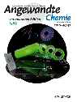
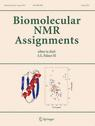

Scientific Programmer
Google Scolar: Jonathan Helmus
16. M. Heistermann, S. Collis, M.J. Dixon, J.J. Helmus, A. Henja, D.B. Michelson, T. Pfaff An Open Virtual Machine for Cross-Platform Weather Radar Science, Bull. Amer. Meteor. Soc. 2015, online early release. [doi]
15. M. Heistermann, S. Collis, M.J. Dixon, S. Giangrande, J.J. Helmus, B. Kelley, J. Koistinen, D.B. Michelson, M. Peura, T. Pfaff, D.B. Wolff, The Emergence of Open-Source Software for the Weather Radar Community, Bull. Amer. Meteor. Soc. 2015, 96, 117-128. [doi]
14. J.J. Helmus, C.P. Jaroniec, Nmrglue: An open source Python package for the analysis of multidimensional NMR data, J. Biomol. NMR 2013, 55, 355-367. [doi] [pubmed]
13. I. Sengupta, P.S. Nadaud, J.J. Helmus, C.D. Schwieters, C.P. Jaroniec,
Protein fold determined by paramagnetic magic-angle spinning solid-state NMR spectroscopy,
Nature Chem. 2012, 4, 410-417.
[doi]
[pubmed]
•OSU Research News Article
•spectroscopyNOW.com Article
12. E.M. Jones, B. Wu, K. Surewicz, P.S. Nadaud, J.J. Helmus, S. Chen, C.P. Jaroniec, W.K. Surewicz, Structural polymorphism in amyloids: New insights from studies with Y145Stop prion protein fibrils, J. Biol. Chem. 2011, 286, 42777-42784. [doi] [pubmed]
11. J.J. Helmus, K. Surewicz, M.I. Apostol, W.K. Surewicz, C.P. Jaroniec, Intermolecular alignment in Y145Stop human prion protein amyloid fibrils probed by solid-state NMR spectroscopy, J. Am. Chem. Soc. 2011, 133, 13934-13937. [doi] [pubmed]
10. P.S. Nadaud, I. Sengupta, J.J. Helmus, C.P. Jaroniec, Evaluation of the influence of intermolecular electron-nucleus couplings and intrinsic metal binding sites on the measurement of 15N longitudinal paramagnetic relaxation enhancements in proteins by solid-state NMR, J. Biomol. NMR 2011, 51, 293-302. [doi] [pubmed]
9. P.S. Nadaud, J.J. Helmus, I. Sengupta, C.P. Jaroniec, Rapid acquisition of multidimensional solid-state NMR spectra of proteins facilitated by covalently bound paramagnetic tags, J. Am. Chem. Soc. 2010, 132, 9561-9563. [doi] [pubmed]
8. H. Shao, J. Seifert, N.C. Romano, M. Gao, J.J. Helmus, C.P. Jaroniec, D.A. Modarelli, J.R. Parquette,
Amphiphilic self-assembly of an n-type nanotube,
Angew. Chem. Int. Ed. 2010, 49, 7688-7691.
[doi]
[pubmed]

7. J.J. Helmus, K. Surewicz, W.K. Surewicz, C.P. Jaroniec, Conformational flexibility of Y145Stop human prion protein amyloid fibrils probed by solid-state nuclear magnetic resonance spectroscopy, J. Am. Chem. Soc. 2010, 132, 2393-2403. [doi] [pubmed]
6. P.S. Nadaud, J.J. Helmus, S.L. Kall, C.P. Jaroniec, Paramagnetic ions enable tuning of nuclear relaxation rates and provide long-range structural restraints in solid-state NMR of proteins, J. Am. Chem. Soc. 2009, 131, 8108-8120. [doi] [pubmed]
5. J.J. Helmus, K. Surewicz, P.S. Nadaud, W.K. Surewicz, C.P. Jaroniec,
Molecular conformation and dynamics of the Y145Stop variant of human prion protein in amyloid fibrils,
Proc. Natl. Acad. Sci. USA 2008, 105, 6284-6289.
[doi]
[pubmed]
•OSU Research News Article
4. J.J. Helmus, P.S. Nadaud, N. Höfer, C.P. Jaroniec, Determination of methyl 13C-15N dipolar couplings in peptides and proteins by three-dimensional and four-dimensional magic-angle spinning solid-state NMR spectroscopy, J. Chem. Phys. 2008, 128, 052314. [doi] [pubmed]
3. P.S. Nadaud, J.J. Helmus, C.P. Jaroniec,
13C and 15N chemical shift assignments and secondary structure of the B3 immunoglobulin-binding domain of streptococcal protein G by magic-angle spinning solid-state NMR spectroscopy,
Biomol. NMR Assign. 2007, 1, 117-120.
[doi]
[pubmed] *Cover article.

2. P.S. Nadaud, J.J. Helmus, N. Höfer, C.P. Jaroniec, Long-range structural restraints in spin-labeled proteins probed by solid-state nuclear magnetic resonance spectroscopy, J. Am. Chem. Soc. 2007, 129, 7502-7503. [doi] [pubmed]
1. S. Giri, C.Gaebler, J. Helmus, M. Affatigato, S. Feller, M.A. Kodama, General study of packing in oxide glass systems containing alkali. J. Non-Crystalline Solids 2004, 347, 87-92. [doi]